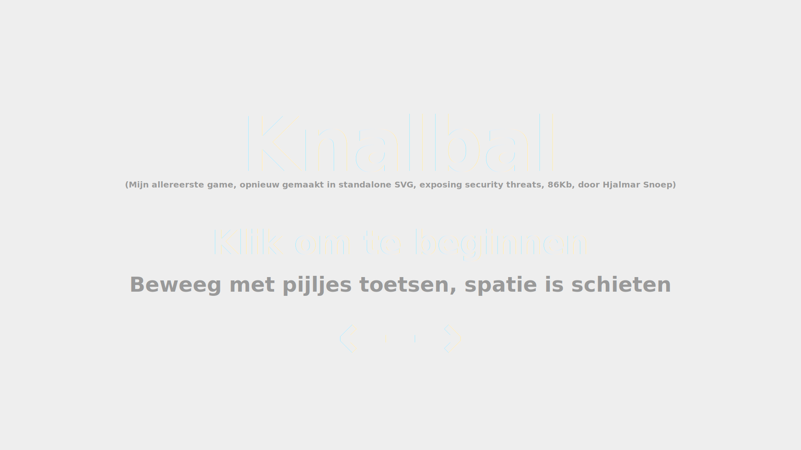

Knalbal
Mogelijk Security Probleem
Hierboven zie je een iframe, met ALLEEN een SVG erin.Toch zit er geluid bij de game en interactie in de vorm van Javascript.
Dit kan een beveilingsprobleem zijn, als je niet oplet en bijvoorbeeld gewoon een onbekende SVG op je pagina plaatst als object of inline.
Doordat je in SVG javascript kan insluiten, kun je dan een XSS attack via SVG verwachten!
Voorkomen van Security Probleem 1
Plaats geen onbekende SVG's als svg (dus inline, met een use tag of als object), maar alleen als img.
Zoals deze
Voorkomen van Security Probleem 2
Mocht je toch een SVG die wordt geupload in de database moeten plaatsen, dan is het handig deze erg grondig te cleanen.
Omdat het XML is, kan dat met strip_tags in PHP:
strip_tags($svg,'<a><circle><clipPath><color-profile><defs><desc><discard><ellipse><feBlend><feColorMatrix><feComponentTransfer><feComposite><feConvolveMatrix><feDiffuseLighting><feDisplacementMap><feDistantLight><feDropShadow><feFlood><feFuncA><feFuncB><feFuncG><feFuncR><feGaussianBlur><feImage><feMerge><feMergeNode><feMorphology><feOffset><fePointLight><feSpecularLighting><feSpotLight><feTile><feTurbulence><filter><g><hatch><hatchpath><image><line><linearGradient><marker><mask><mesh><meshgradient><meshpatch><meshrow><metadata><mpath><path><pattern><polygon><polyline><radialGradient><rect><set><solidcolor><stop><svg><switch><symbol><text><textPath><title><tspan><style><use><view>');
Ook is het verstandig om te kijken naar: use en xlink:href en of je daar nog meer wilt toestaan. Deze kun je ook strippen door bij bovenstaande toegestane tags <use> weg te laten. Ook zou je kunnen overwegen image en style eruit te halen, omdat ook deze een link naar een andere document zouden kunnen bevatten.